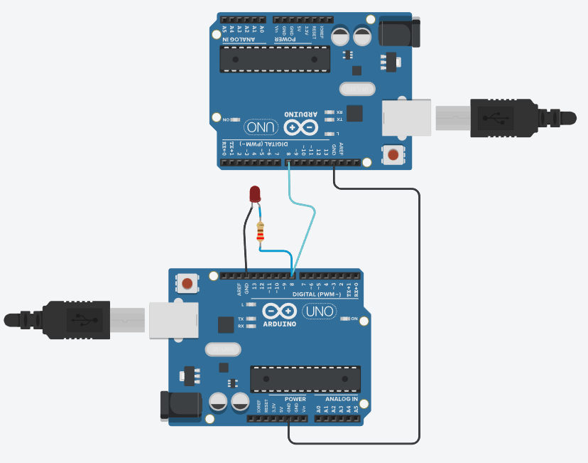
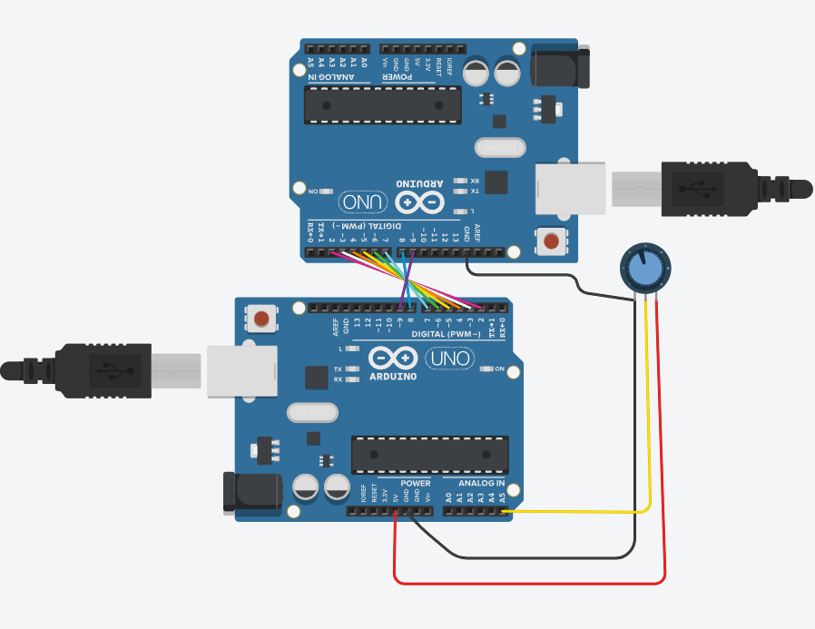
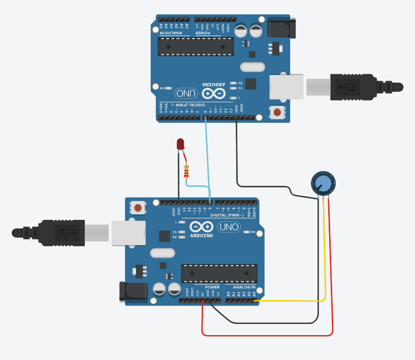

En esta practica vimos sobre los distintos protocolos de comunicacion, y los aplicamos en arduino, por medio del simulador TinkerCad, y de ahi los armamos en la vida real. Los materiales que usamos fueron los siguientes:
Código Arduino Transmisor:
// Enviar Pulsos Arduino 1
void Pulsos (int Cantidad, int Frecuencia) {
for (int i = 0; i < Cantidad; i++) {
digitalWrite(8, HIGH);
delay(1000 / Frecuencia);
digitalWrite(8, LOW);
delay(1000 / Frecuencia);
}
}
void setup() {
pinMode(8, OUTPUT);
Pulsos(256, 100); /* Esta fue la cantidad y frecuencia máxima
a la que se puede llegar, ya que después
de aumentar un 0 al 100,este ya no llega
a contar 256 pulsos. */
}
void loop() {
}
Código Arduino Receptor:
// Contador de Pulsos Arduino 2
int Cuenta = 0;
void setup() {
pinMode(8, INPUT);
Serial.begin(9600);
}
void loop() {
if (digitalRead(8) == HIGH) {
while (digitalRead(8) == HIGH);
Cuenta++;
Serial.println(Cuenta);
}
}
Imagen Circuito TinkerCad:
Video:
Código Arduino Transmisor:
void PulsosPorTiempo (int Tiempo, int Frecuencia)
{
int Periodo = 1000 / Frecuencia; // Tiempo de un ciclo (en ms)
int Cantidad = (Tiempo / Periodo) * 2; /* Cantidad de pulsos
completos en el tiempo especificado. */
for (int i = 0; i < Cantidad; i++)
{
digitalWrite(8, HIGH);
delay(1000 / Frecuencia / 2);
digitalWrite(8, LOW);
delay(1000 / Frecuencia / 2);
}
}
void setup()
{
pinMode(8, OUTPUT);
PulsosPorTiempo(10, 100);/*Enviar pulsos
durante 2560 ms (2.56 segundos) a 100 Hz*/
}
void loop()
{
}
Código Arduino Receptor:
//Contador de Pulsos Arduino 2
unsigned long lastPulseTime = 0;
unsigned long currentTime;
int Cuenta = 0;
void setup()
{
pinMode(8, INPUT);
Serial.begin(9600);
}
void loop()
{
if (digitalRead(8) == HIGH)
{
while (digitalRead(8) == HIGH); // Espera a que el pulso termine
Cuenta++;
currentTime = micros();
unsigned long pulseDuration = currentTime - lastPulseTime;
lastPulseTime = currentTime;
Serial.print("Cuenta: ");
Serial.print(Cuenta);
Serial.print(" Tiempo entre pulsos: ");
Serial.println(pulseDuration);
}
}
Imagen Circuito TinkerCad:
Video:
Código Arduino Transmisor:
// C++ code ARDUINO TRANSMISOR
int valor; //variable que almacena la lectura analógica raw
int valorRedondeado; // Valor redondeado
void setup()
{
for (int i = 2; i <= 9; i++) {
pinMode(i, OUTPUT);
}
//Inicializamos la comunicación serial
Serial.begin(9600);
//Escribimos por el monitor serie mensaje de inicio
Serial.println("Inicio de sketch - valores del potenciometro");
}
void loop()
{
// leemos del pin A0 valor
valor = analogRead(A5);
float valor8bits = (255.0 / 1023.0) * valor;
valorRedondeado = round(valor8bits); // Redondear el valor
//Imprimimos por el monitor serie
Serial.print("El valor es = ");
Serial.println(valor);
Serial.print("El valor en 8 bits es = ");
Serial.println(valorRedondeado);
Serial.print("El Valor en binario es: ");
printBinary(valorRedondeado);
Serial.println();
delay(2000); // Espera de 1 segundo antes de la próxima lectura
sendBits(valorRedondeado); // Enviar el valor bit x bit al otro Arduino
}
void printBinary(int num) {
for (int i = 7; i >= 0; i--) {
Serial.print(bitRead(num, i));
}
}
void sendBits(int num) {
for (int i = 0; i < 8; i++) {
int bit = bitRead(num, i);
digitalWrite(2 + i, bit); // Enviar cada bit a los pines 2 al 9
}
}
Código Arduino Receptor:
int receivedValue = 0; // Valor recibido
void setup() {
Serial.begin(9600); // Inicializa la comunicación serie a 9600 baudios
// Configurar los pines del 2 al 9 como entradas
for (int i = 2; i <= 9; i++) {
pinMode(i, INPUT);
}
}
void loop() {
receivedValue = 0;
for (int i = 0; i < 8; i++) {
int bit = digitalRead(2 + i); // Leer cada bit de los pines 2 al 9
receivedValue |= (bit << i); // Reconstruir el valor
}
Serial.print("Valor recibido en binario: ");
printBinary(receivedValue);
Serial.print(" - Valor recibido: ");
Serial.println(receivedValue);
delay(2000); // Espera de 1 segundo antes de la próxima lectura
}
// Función para imprimir un número en binario
void printBinary(int num) {
for (int i = 7; i >= 0; i--) {
Serial.print(bitRead(num, i));
}
}
Imagen Circuito TinkerCad:
Video:
Código Arduino Transmisor:
// C++ code ARDUINO TRANSMISOR
void setup() {
Serial.begin(9600); // Inicializar comunicación serial para depuración
pinMode(A5, INPUT); // Pin del potenciómetro
pinMode(8, OUTPUT); // Pin para transmitir datos
}
void loop() {
int analogValue = analogRead(A5);
int value8Bits = analogValue / 4;
Serial.print("Enviando valor (0-255): ");
Serial.println(value8Bits);
sendByte(value8Bits);
delay(1000); // Esperar un segundo antes de la siguiente transmisión
}
void sendByte(int value) {
for (int i = 7; i >= 0; i--) {
int bit = (value >> i) & 1;
digitalWrite(8, bit);
delay(10); // Tiempo de retardo para sincronización (ajustable)
}
}
Código Arduino Receptor:
// C++ code ARDUINO RECEPTOR
void setup() {
Serial.begin(9600); // Inicializar comunicación serial para depuración
pinMode(8, INPUT); // Pin para recibir datos
}
void loop() {
int receivedValue = receiveByte();
Serial.print("Valor recibido (0-255): ");
Serial.println(receivedValue);
Serial.print("Binario: ");
printBinary(receivedValue);
delay(1000); // Esperar un segundo antes de la siguiente lectura
}
int receiveByte() {
int value = 0;
for (int i = 7; i >= 0; i--) {
int bit = digitalRead(8);
value |= (bit << i);
delay(10); // Tiempo de retardo para sincronización (ajustable)
}
return value;
}
void printBinary(int value) {
for (int i = 7; i >= 0; i--) {
Serial.print((value >> i) & 1);
}
Serial.println();
}
Imagen Circuito TinkerCad:
Video: